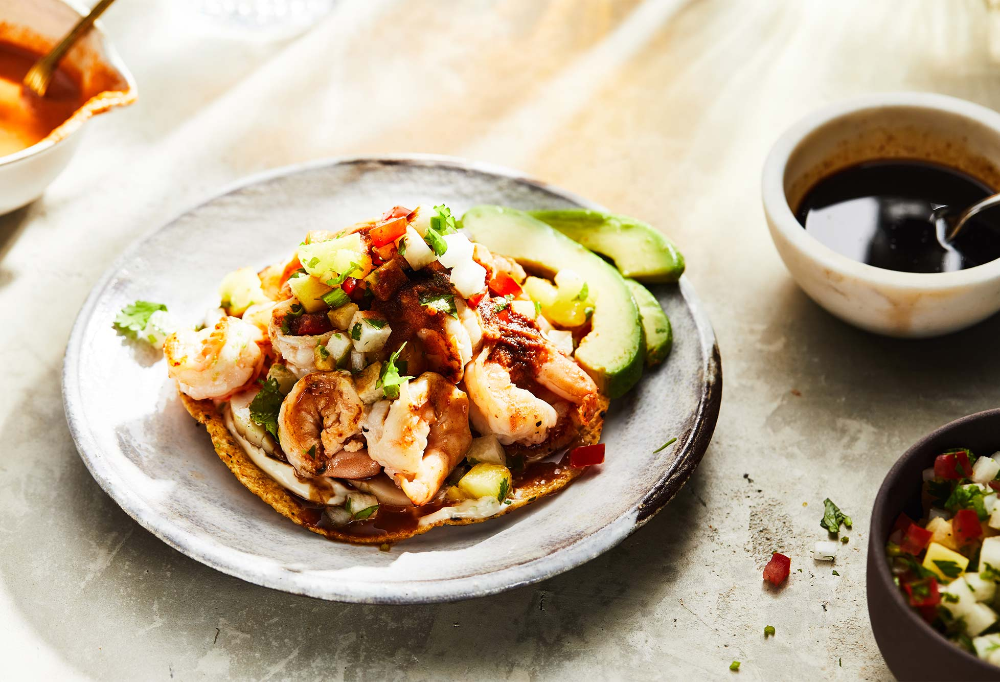

If you're using raw fish, cut it into small pieces and marinate it in lime juice until it becomes opaque.
Alternatively, you can use already cooked seafood, which is easier and more predictable.
For shrimp, cook them in boiling water for few minutes until pink and opaque. Let them cool and chop them.
Dice the tomato, cucumber onion, and jalapeño. Finely chop the cilantro.
In a large bowl, combine:
Add lime juice, salt, pepper, and hot sauce. Mix gently
Spread a little avocado or seafood mixture directly onto each tostada.
Then generously add the seafood mixture on top.
Finish with: